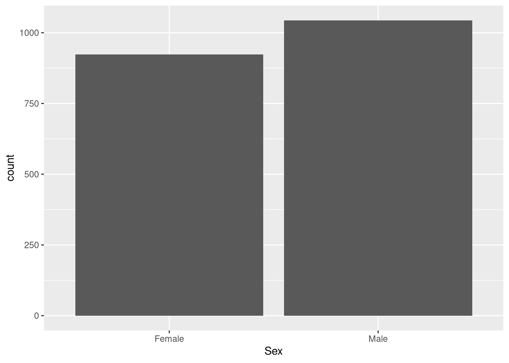
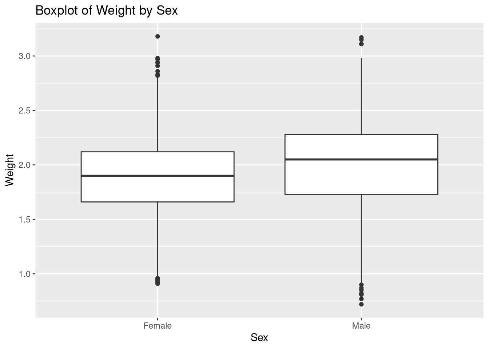
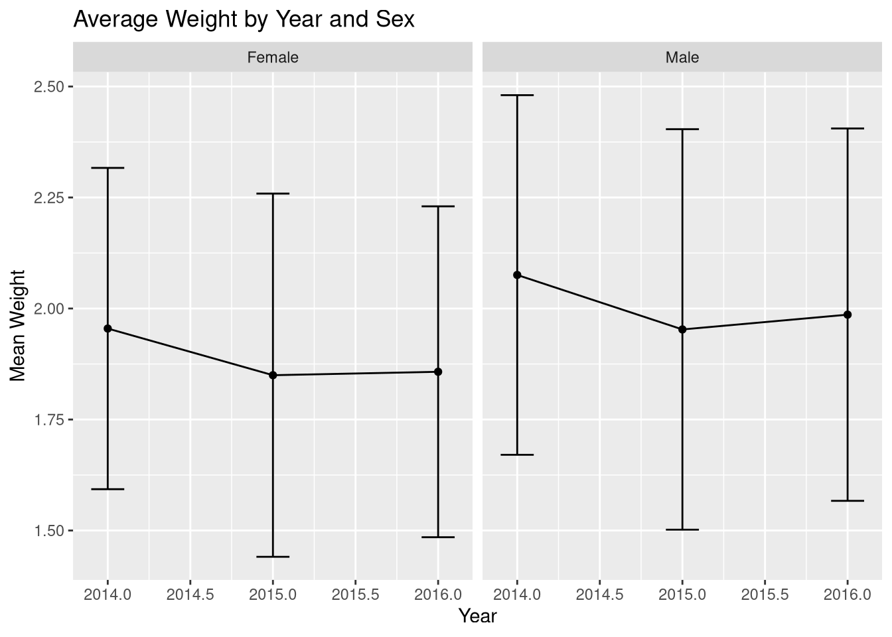
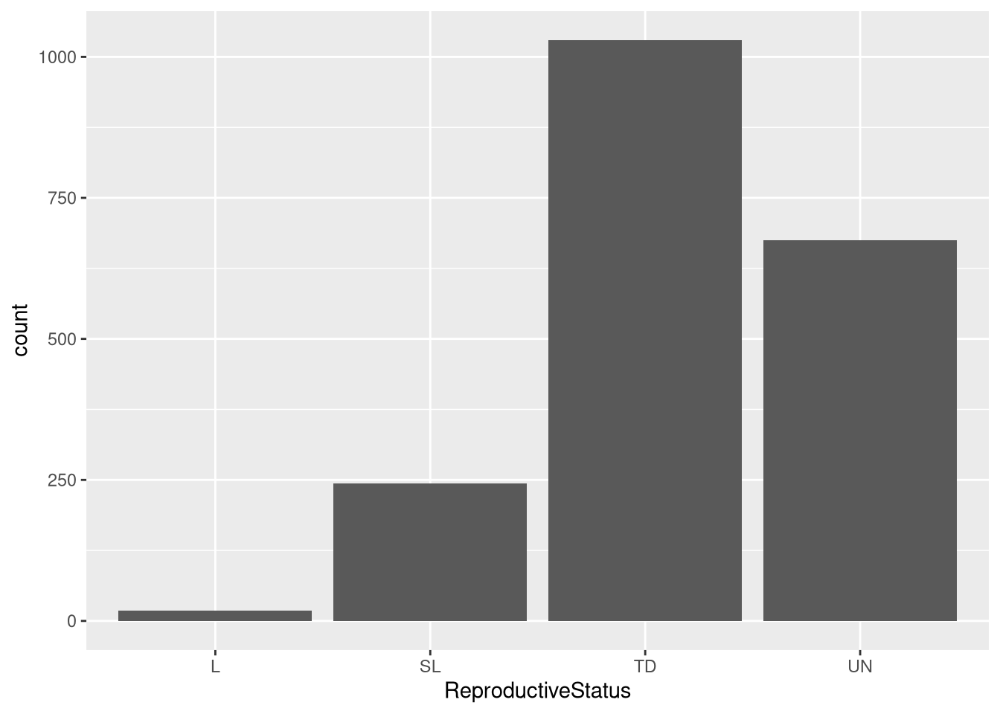
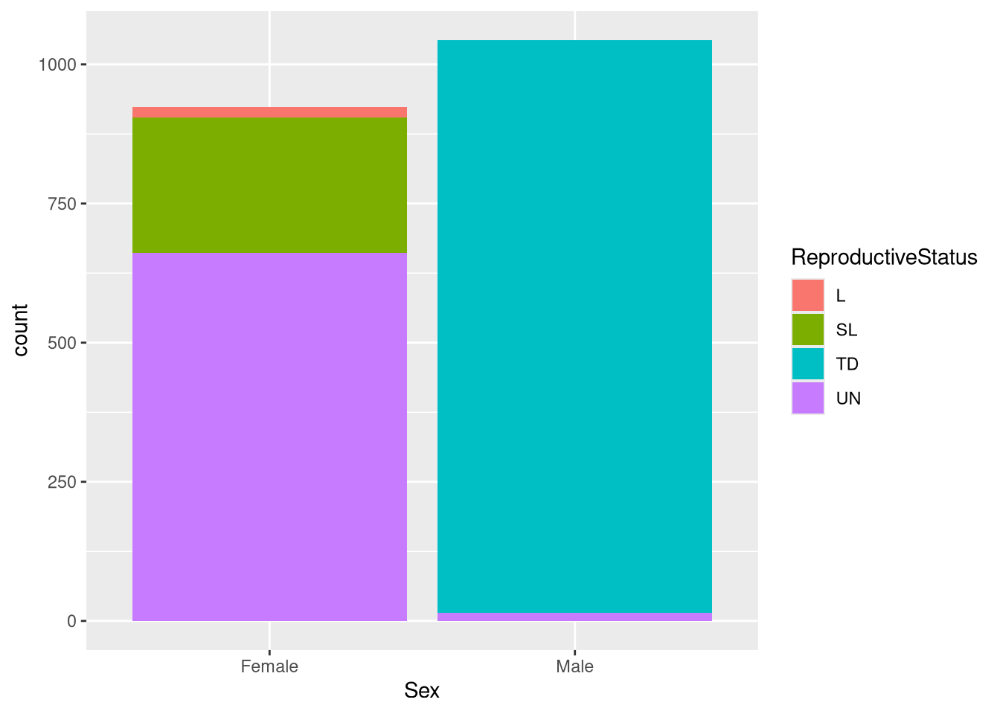

install.packages("tidyverse")
library(tidyverse)Competition
Channel Islands
The Channel Islands are a chain of eight islands located off the southern coast of California in the Pacific Ocean. They are known for their stunning natural beauty, ecological richness, and deep cultural history.
The Eight Channel Islands (North to South)
San Miguel Island
Santa Rosa Island
Santa Cruz Island
Anacapa Island
Santa Barbara Island
San Nicolas Island
San Clemente Island
Santa Catalina Island
Channel Islands National Park
- Includes five islands: San Miguel, Santa Rosa, Santa Cruz, Anacapa, and Santa Barbara.
- Sometimes called the “Galápagos of North America” for its rich biodiversity and many endemic species.
- Accessible only by boat or small plane.
- Ideal for hiking, kayaking, camping, and wildlife observation.
Cultural and Historical Significance
- Originally inhabited by Chumash and Tongva indigenious groups for thousands of years.
- Home to important archaeological and cultural heritage sites.
Island Fox (Urocyon littoralis)
The island fox is a small, charismatic canid species endemic to six of the eight Channel Islands off the coast of southern California. It’s one of the best examples of island dwarfism, having evolved from the mainland gray fox (Urocyon cinereoargenteus) to become significantly smaller.
In the 1990s, several island fox populations faced near extinction due to golden eagle predation, canine distemper virus, and habitat degradation. The island fox was listed as endangered in 2004. Recovery efforts of the island fox included removal of golden eagles, vaccination and captive breeding programs, reintroduction of native bald eagles, and habitat restoration.
Competition
For the competition, you will investigate one of the two sections, Fox Weight or Fox Reproductive Status. Follow the guidelines in the section of your choice and complete one of the challenges. You may also analyze the data in any other way or work on the other section, but it is not necessary. Afterwards, create a presentation using google slides. Share the slides to the lead instructor in the classroom. They will provide their email on the board.
Analysis
Using the tutorial and example analysis, complete at least one of the challenges.
Slides and Presentation
The slides will be used for a presentation, in the last 30 minutes. You should have no more than 5 slides displaying what your findings are. Here is an example of the slides you should submit:
- Title Slide
- Come up with a creative title for your analysis.
- Include the names of all your group members.
- Include Team Name
- Provide what you have analyzed
- Numerical Results
- Provide information about the results you found.
- Plots
- Provide any plots.
- Conclusions
- Answer your research question.
An Example can be found here.
Data and Prep
The data provided is part of an ongoing longitudinal study from 2014 to 2016 of trap monitoring. This resulted in collection of 4,975 recorded trap observations, which may have contained a fox or not. Other information collected from the fox were Sex, Age Class, Weight, Body Condition, Reproductive Status, and Vaccinations. Information of the data collected can be found in the Databook.
You can download the data and script files here. (Password: dolphins_2025) Downolad, unzip file, load R project, and select “datathon.R” file to follow datathon document.For more help, watch this video
Installing and Loading Packages
Loading Data
We will need to load the data into R using the read_csv function.
df <- cidf <- read_csv("data_for_csuci_datathon_2014_2016.csv") # Loads the Data Set into the objects df and cidfCleaning Data
Renaming Categories
Looking at the Databook, the variables Vaccinations, ReproductiveStatus and BodyCondition have interesting ways they are coded. In Vaccinations, missing values (NA) are considered as not vaccinated; therefore, changing the missing to “NV” will ensure that they are correctly classified, see data book. In ReproductiveStatus, the missing values (NA) indicate unknown reproductive status. In BodyCondition, the numerical values 1, 2, 3, 4, and 5, represent a condition. To make the condition easier, we will convert them to the categories. Run the code below to alter them:
df <- df |> mutate( # Will change the variables in the df data set
Vaccinations = case_when(is.na(Vaccinations) ~ "NV", .default = Vaccinations), # Reclassifies Missing Data in Vaccination as "N" per code book.
ReproductiveStatus = case_when(is.na(ReproductiveStatus) ~ "UN", .default = ReproductiveStatus), # Reclassifies Missing Data in Vaccination as "N" per code book.
BodyCondition = case_when( # Begins to modify BodyCondition
as.character(BodyCondition) == "1" ~ "emaciated", # Changes 1 to emaciated
as.character(BodyCondition) == "2" ~ "thin", # Changes 2 to thin
as.character(BodyCondition) == "3" ~ "healthy wild", # Changes 3 to healthy wild
as.character(BodyCondition) == "4" ~ "extra fat reserves", # Changes 4 to Extra Fat Reserve
as.character(BodyCondition) == "5" ~ "extreme fat reserves" # Changes 5 to Extreme Fat Reserves
)
)Missing Values
Several variables in the data set may have missing values. Using the summary(), we can determine which variables have missing values by looking at the “NA’s” category.
summary(df) Island SamplingYear GridCode
Length:4975 Min. :2014 Length:4975
Class :character 1st Qu.:2014 Class :character
Mode :character Median :2015 Mode :character
Mean :2015
3rd Qu.:2016
Max. :2016
TrapDate NightNumber TrapNumber
Min. :2014-07-16 00:00:00.00 Min. :1.000 Min. : 1.00
1st Qu.:2014-08-24 00:00:00.00 1st Qu.:2.000 1st Qu.: 4.00
Median :2015-08-12 00:00:00.00 Median :3.000 Median : 8.00
Mean :2015-08-25 01:31:27.92 Mean :3.392 Mean : 18.87
3rd Qu.:2016-08-18 00:00:00.00 3rd Qu.:5.000 3rd Qu.: 11.00
Max. :2016-11-30 00:00:00.00 Max. :6.000 Max. :108.00
TrapResult Pittag CaptureType Sex
Length:4975 Length:4975 Length:4975 Length:4975
Class :character Class :character Class :character Class :character
Mode :character Mode :character Mode :character Mode :character
AgeClass Weight Weight_units BodyCondition
Min. :0.000 Min. : 0.72 Length:4975 Length:4975
1st Qu.:1.000 1st Qu.: 1.73 Class :character Class :character
Median :1.000 Median : 2.02 Mode :character Mode :character
Mean :1.557 Mean : 49.49
3rd Qu.:3.000 3rd Qu.: 2.30
Max. :4.000 Max. :910.00
NA's :2840 NA's :2808
ReproductiveStatus Vaccinations
Length:4975 Length:4975
Class :character Class :character
Mode :character Mode :character
We notice that the variables AgeClass, Weight, and BodyCondition have missing values. For this analysis, we will remove the missing values (NA).
df <- drop_na(df, AgeClass, Weight, BodyCondition) # Removes the missing values (NA) using the variables AgeClass, Weight, and BodyConditionAfter cleaning the data, this should result in 1,967 recorded foxes!
nrow(df)[1] 1967Fox Weight Analysis
Imagine you’re a field biologist tracking animal health across the remote Santa Rosa and San Miguel Islands. You’ve noticed that some animals seem heavier in certain years—but is it just your imagination, or is there a real trend?
The Weght variable contains information of the Fox’s weight in killogrgms. Let’s start by calculating the mean weight and standard deviation of weight using mean() and sd() functions:
mean_weight<-mean(df$Weight)
sd_weight<-sd(df$Weight)
mean_weight[1] 1.940275sd_weight #printing the values[1] 0.4140872We see that mean weght of fox is about 1.9 kg with standard deviation about .41 kg.
We will use the table() and prop.table() function to get the frequencies and proportions for the Sex.
count_df <- table(df$Sex) # Using the 'Sex' variable from the `df` data set, we count the frequencies of each category with the table function and storing it in rs_df.
count_df # Printing out the contents of "rs_df"
Female Male
923 1044 Using the table() function, we can see that there are 923 female and 1044 male Foxes.
prop.table(count_df) # Computing the Proportions of "rs_df"
Female Male
0.4692425 0.5307575 Using the prop.table() function, we can see that that there are slightly more male Foxes (about 53%) vs. female Foxes (about 47%).
We can visualize the data using the ggplot functions:
ggplot(df) + # Setting up the data to create a plot.
geom_bar(aes(Sex)) # Creating a bar chart based on the variable "ReproductiveStatus"
The bar plot demonstrates that there are more males than females.
Weight vs Sex
Let’s visualize the variable Weight and Sex with a box plot using ggplot:
ggplot(df, aes(x = Sex, y = Weight)) +
geom_boxplot() +
labs(
title = "Boxplot of Weight by Sex",
x = "Sex",
y = "Weight"
)
From the box plot we see that male Foxs are slightly heavier than female Foxes.
We can use group_by() function to separate male from female population and calculate mean and standard deviation separately:
weight_summary <- df %>%
group_by(Sex) %>%
summarise(
mean_weight = mean(Weight),
sd_weight = sd(Weight),
.groups = "drop"
)
weight_summary# A tibble: 2 × 3
Sex mean_weight sd_weight
<chr> <dbl> <dbl>
1 Female 1.88 0.386
2 Male 1.99 0.431This table confirms that male Foxes are slightly heavier, about 1.99 kg, than female Foxes, about 1.88 kg, with standard deviations also slightly higher for male Foxes.
Weight vs Sex over time
To see weight vs sex trend over time we can use group_by() and ggplot functions again:
weight_summary_yearly <- df %>%
group_by(Sex, SamplingYear) %>%
summarise(
mean_weight = mean(Weight, na.rm = TRUE),
sd_weight = sd(Weight, na.rm = TRUE),
.groups = "drop"
) #group the data by Sex and Year and calculate mean and standard deviation of weight
weight_summary_yearly# A tibble: 6 × 4
Sex SamplingYear mean_weight sd_weight
<chr> <dbl> <dbl> <dbl>
1 Female 2014 1.95 0.362
2 Female 2015 1.85 0.409
3 Female 2016 1.86 0.373
4 Male 2014 2.08 0.405
5 Male 2015 1.95 0.451
6 Male 2016 1.99 0.419From the table we see a downward trend in weight for both females and males. Let’s plot it on the graph:
ggplot(weight_summary_yearly, aes(x = SamplingYear, y = mean_weight)) +
geom_line() +
geom_point() +
geom_errorbar(aes(ymin = mean_weight - sd_weight,
ymax = mean_weight + sd_weight), width = 0.2) +
facet_wrap(~ Sex) +
labs(
title = "Average Weight by Year and Sex",
y = "Mean Weight",
x = "Year"
)
Challenges
Fox Reproductive Status Analysis
The ReproductiveStatus variable contains information of the Fox’s reproductive status when captures. This data is recorded as “N” (Not actively reproductive), “L” (Lactating), “SL” (Signs of Lactating), and “TD” (Testes Distended).
Descriptive Statistics
Reproductive Status
We will use the table() and prop.table() function to get the frequencies and proportions for the ReproductiveStatus.
rs_df <- table(df$ReproductiveStatus) # Using the 'ReproductiveStatus' variable from the `df` data set, we count the frequencies of each category with the table function and storing it in rs_df.
rs_df # Printing out the contents of "rs_df"
L SL TD UN
18 244 1030 675 Using the table() function, we can see that there are 3 common reproductive statuses by Fox: “L” at 18, “SL” at 244, “TD” at 1030, and “UN” at 675.
prop.table(rs_df) # Computing the Proportions of "rs_df"
L SL TD UN
0.009150991 0.124046772 0.523640061 0.343162176 Using the prop.table() function, we can see that that the most common status is “TD” at 52.4% and the least common is “L” at the 0.9%. Both “SL” and “UN” represent 12.4% and 34.3% of the data, respectively.
We can visualize the data using the ggplot functions:
ggplot(df) + # Setting up the data to create a plot.
geom_bar(aes(ReproductiveStatus)) # Creating a bar chart based on the variable "ReproductiveStatus"
The bar plot demonstrates that “TD” is the most common status in the data, and “L” is the least common status in the data.
Sex and Reproductive Status
Let’s compare the frequencies between the variables Sex and Reproductive Status. We will be using the same table() function:
xy_df <- table(df$ReproductiveStatus, df$Sex)
# Use the variables "ReproductiveStatus" and "Sex" from the "df" data set
# Use the table function to compute the crosstabs
# Store the results in the xy_df object
xy_df # Print results out
Female Male
L 18 0
SL 244 0
TD 0 1030
UN 661 14The results show that certain categorical combinations between ReproductiveStatus and Sex are 0, which is to be expected. The category “UN” is found in both Male and Female foxes. Looking at Female foxes, The most common type is “UN”, followed by “SL”. For Male foxes, the most common type was “TD”.
Let’s find the proportions for each the combination of the variables using the prop.table() function.
prop.table(xy_df)
Female Male
L 0.009150991 0.000000000
SL 0.124046772 0.000000000
TD 0.000000000 0.523640061
UN 0.336044738 0.007117438We can see that 52.4% of the data are Male and “TD” foxes, 33.6% of the data are Female and “UN” foxes, and 12.4% of the data are Female and “SL” foxes.
Let’s visualize the variable ReproductiveStatus and Sex with a stacked bar plot:
ggplot(df) +
geom_bar(aes(Sex, fill = ReproductiveStatus))
The plot indicate which categories are most dominant in each sex. We can see that the most dominant reproductive status in Male foxes is testes distended. For Female foxes, we can see tha tthe most common reproductive status being unknown.